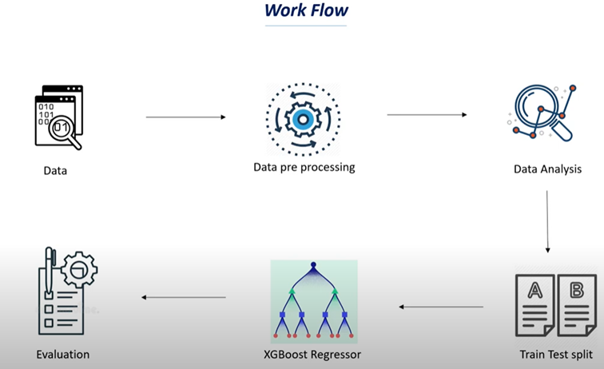
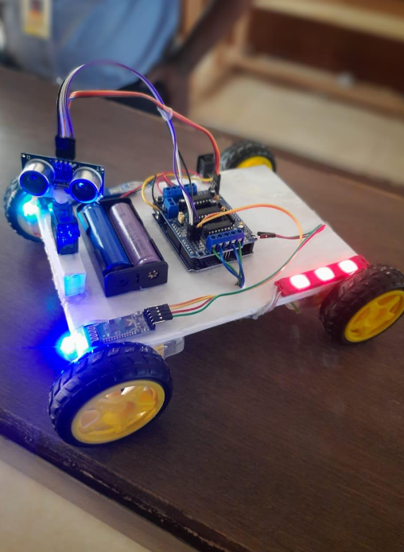
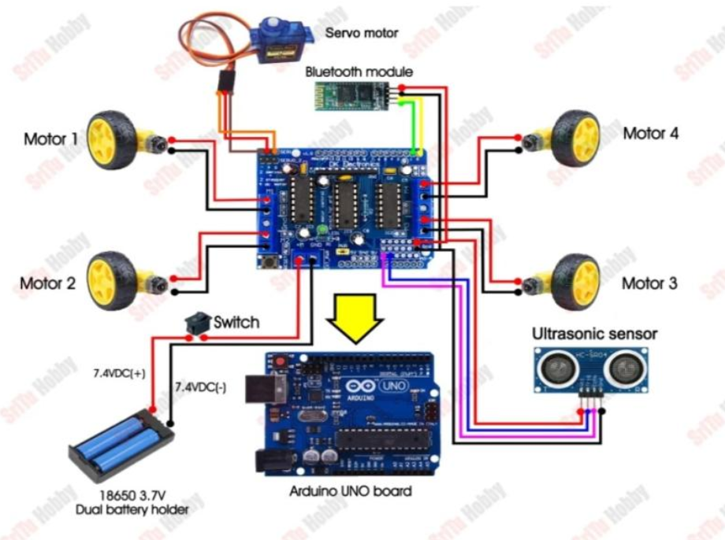
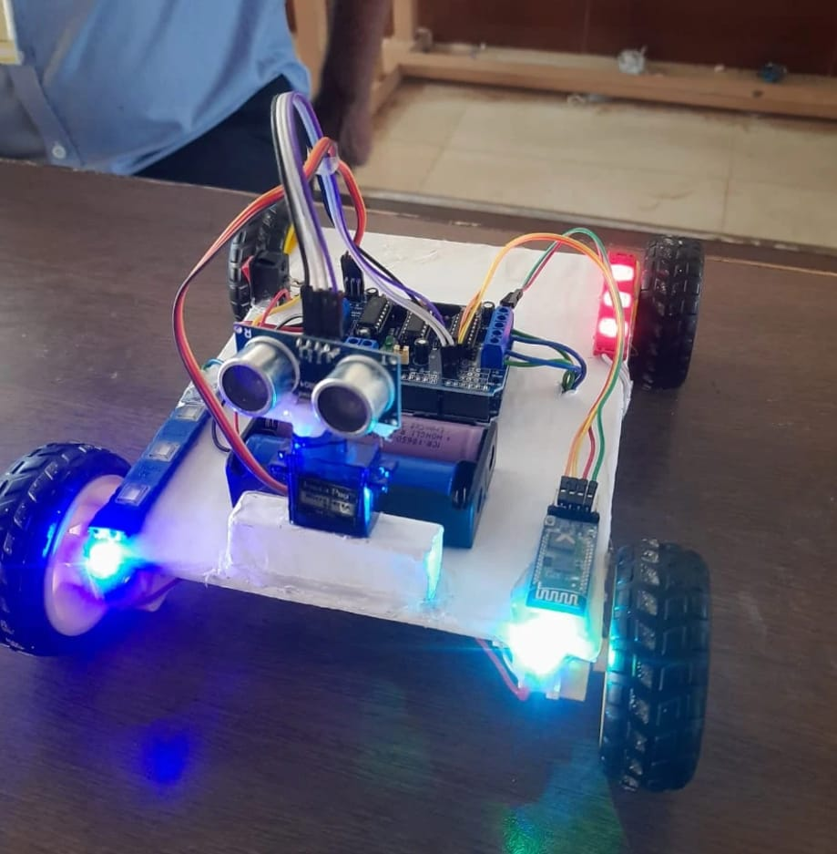

CALORIES BURNT PREDICTION USING MACHINE LEARNING
Calorie is a unit of hear energy. Health and fitness are becoming
increasingly important to individuals and society. As people seek to live
healthier lifestyles, they are turning to wearable devices and fitness trackers to
monitor their physical activity and track their progress. One important metric
that these devices track is the number of calories burnt during physical activity.
Accurately predicting calorie burn can help individuals set and achieve fitness
goals and can also inform health coaching and wellness tracking programs.
The motivation for this research is to develop a machine-learning
model that can accurately predict calorie burn during physical activity. This has
potential applications in a range of settings, including personalized health
coaching, fitness tracking, and wellness programs. By developing an accurate
calorie burn prediction model, we can help individuals make more informed
decisions about their physical activity and improve their overall health and
well-being.

MULTI-FUNCTION ARDUINO ROBOT
Generally it is an autonomous robot, which is an automatically operated machine capable of executing specific tasks with little or no human intervention. Autonomous robots are designed to perform tasks efficiently, accurately, and with a high level of precision. They are often equipped with sensors, processors, and actuators that enable them to perceive their environment, make decisions, and take actions based on the information they gather.
The Robot can be controlled using the following methods:
1.Obstacle Avoidance: This method involves equipping the robot with sensors such as ultrasonic or infrared sensors to detect obstacles in its path. When the robot senses an obstacle, it adjusts its trajectory or stops to avoid collisions. This capability is crucial for enabling the robot to navigate in complex environments without human intervention.
2.Bluetooth Control: Bluetooth control allows a user to communicate with the robot using Bluetooth technology. By pairing a smartphone or another device with the robot, users can send commands or instructions to control its movements, actions, or tasks remotely. Bluetooth control provides a convenient way to interact with the robot from a short distance.
3.Voice Control: Voice control enables the robot to respond to spoken commands from a human operator. This involves integrating speech recognition technology into the robot's system. When the robot receives a voice command, it processes the speech input and executes the corresponding action. Voice control enhances user interaction with the robot and can be particularly useful in scenarios where hands-free operation is essential.


